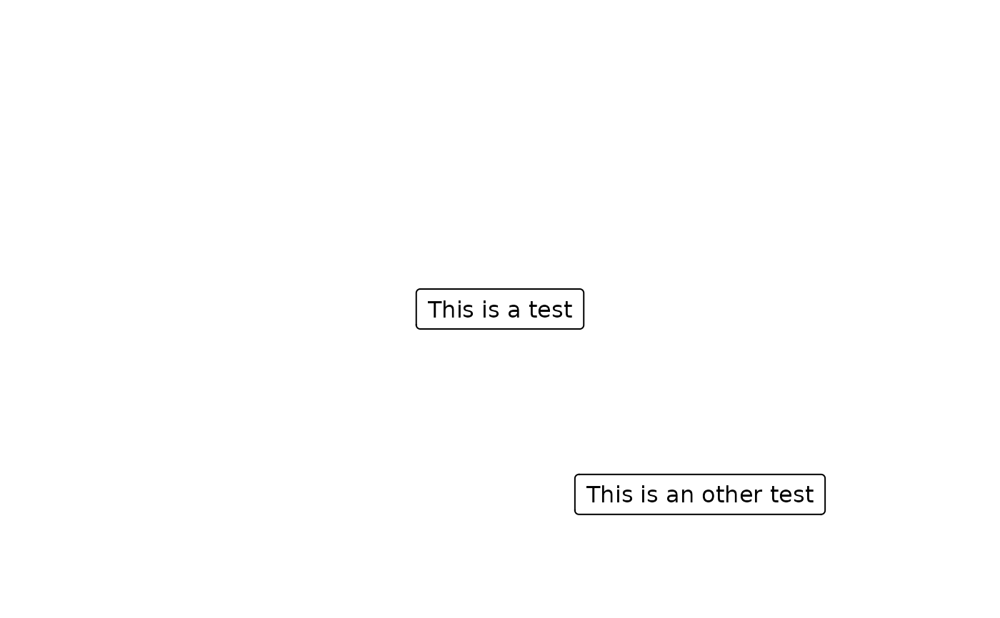

This function is used to create an arrow line to connect two boxes. User should provide the starting and ending side of the arrow.
Usage
connect_box(
start,
end,
connect,
type = c("s", "p"),
name = NULL,
arrow_gp = consort_opt("arrow_gp"),
arrow_length = consort_opt("arrow_length"),
arrow_type = consort_opt("arrow_type")
)Arguments
- start
Starting point of the arrow.
- end
Ending point of the arrow.
- connect
The connection of the box. It should be the combination of the position. The
trefers to "top",lfor "left",bfor "bottom" andrfor "right". The first letter is the starting point of the start box, the second is the ending point of the end box. For example, if one wants to connect the left side of the start box with right side of the left side of the end box, the value should be"lr". All the connection will be started in the middle point.- type
Should be one the
"s"(strait line), or"p"(polyline).- name
A character identifier of the line grob, passed to
linesGrob.- arrow_gp
Graphical parameters
gparobject for the connector line. Defaults togrid::gpar(col = "black", lwd = 1).- arrow_length
Length of the arrowhead as a
unitobject. Defaults tounit(0.1, "inches").- arrow_type
Arrow type, either
"closed"or"open". Defaults to"closed".
Examples
fg1 <- textbox(text = "This is a test")
fg2 <- textbox(text = "This is an other test", 0.7, 0.2)
grid::grid.draw(fg1)
grid::grid.draw(fg2)

connect_box(fg1, fg2, connect = "bl", type = "p")
#> lines[GRID.lines.59]
# Customize line width and color
connect_box(fg1, fg2, connect = "bl", type = "p", arrow_gp = grid::gpar(lwd = 2, col = "red"))
#> lines[GRID.lines.68]
# Or set globally via set_consort_defaults
set_consort_defaults(arrow_gp = grid::gpar(lwd = 2, col = "blue"))